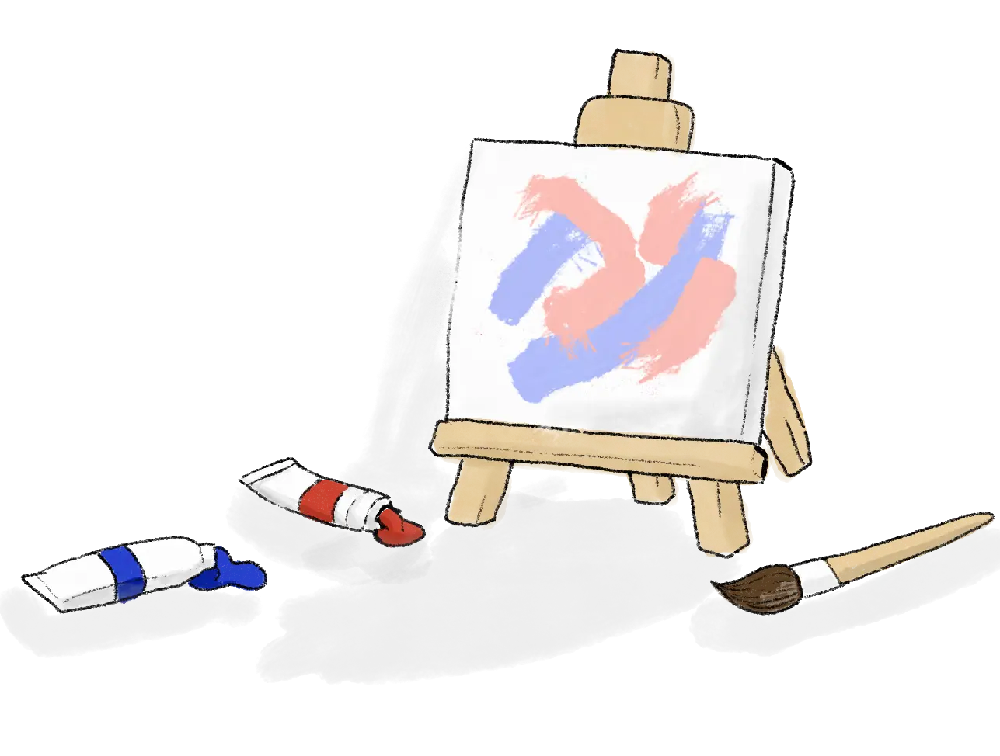

Currently Working On
PUB 231 — Vancouver Graphic Design
Exploring shade from an artistic perspective through colorful canopy designs and stained glass inspired visuals, transforming public spaces into creative experiences.

Exploring shade from an artistic perspective through colorful canopy designs and stained glass inspired visuals, transforming public spaces into creative experiences.